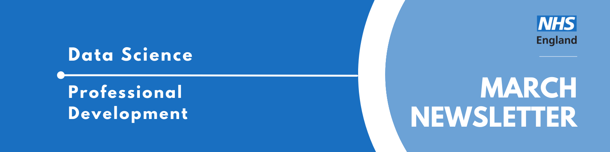

Data Science Community for Health and Care Newsletter March 2025

Welcome to the latest newsletter from the Data Science Community for Health and Care, brought to you by the NHS England Data Science Professional Development Functional Team.
The newsletter team are always happy to receive constructive feedback, and we invite you to send us any contributions you may have.
If you cannot access something of interest to you, please reach out.
Thanks for reading! – newsletter team
The Aerospace Engineer who Loved Spreadsheets
Welcome to the first installment of our “Interview with a Data Scientist” series, where we explore the careers and work of the talented members of the NHS England Data Science team. We aim to showcase the fantastic individuals who contribute to the NHS England Data Science Profession and provide valuable insights for those considering a career in Data Science within the healthcare sector.
The first interview is with Joe Wilson, a former Engineer whose desire to make the perfect F1 Fantasy Team during the COVID pandemic drove him to become a Data Scientist who won’t stop talking about Reproducible Analytical Pipelines.
Read more…
How did you end up in data science at the NHS? What did you do before, and what really sparked your interest in this field?
My journey to data science at the NHS is a blend of engineering roots, a pandemic pivot, and a strong personal connection to healthcare.
My academic background began with an Integrated Master’s in Aerospace Engineering. I was captivated by the problem-solving inherent in understanding how complex systems, particularly aircraft, function. This fascination with engineering persists, as evidenced by my continued interest in aerospace content.
A pivotal moment that hinted at my future direction occurred during a second-year Business Simulation module. We were tasked with managing car companies within a simulated European market. I developed a comprehensive spreadsheet to optimise production, enabling us to create cost-effective cars with popular features. I would go on to make many more spreadsheets, including one that calculated my mark margins for upcoming exams to allow me to still graduate with first class honours.
Following graduation, I joined a small engineering firm, where I contributed to the development of control software for automated test rigs. We built custom rigs to test components like aircraft actuators and truck brake assemblies, using the visual programming language LabVIEW. This involved wiring code sections together, and I still recognise LabVIEW’s distinctive interface in various applications, including airport airbridge controls.
Unfortunately, I lost my job around the onset of the COVID-19 pandemic, coinciding with a severe contraction of the job market. During the lockdown, I used the time to learn Python, which sparked a realisation that I wanted to pursue a career in data science. While I’d always enjoyed numbers, spreadsheets, problem-solving, and programming, the pandemic provided the catalyst to connect these interests.
I enrolled in a Data Science conversion Master’s program at Loughborough University, joining the inaugural cohort of the degree. The decision to apply to the NHS was deeply personal. My father was a GP and healthcare consultant, and my then-girlfriend (now wife), was training to be a doctor. The NHS’s mission resonated with me, and I discovered the NHS Digital Graduate Scheme. I applied and was fortunate enough to be accepted.
I began my role at the NHS just two weeks after submitting my Master’s project.
Once you joined the NHS, what was that experience like? What different roles and teams have you been a part of, and how have they shaped your career?
Joining the NHS was a real whirlwind, but in the best way possible! I’ve been here for three years now, starting at NHS Digital and then transitioning into NHS England after the merger. My first two years were spent on the NHS Digital Graduate Scheme, and since then, I’ve been working as a full-fledged Data Scientist.
That Graduate Scheme was incredible. We were the first cohort of its kind, a group of just under twenty, and we kicked things off with an intense eight-week coding bootcamp. It was a fantastic bonding experience – we’d be hammering away at code and then decompressing with board games during breaks.
My first placement on the NHS Spine project, which is this massive, intricate system connecting all sorts of different NHS systems. Because it’s so complex, everyone was constantly learning, and that made it a really supportive environment for a newbie like me. Plus, I got to see firsthand what a well-oiled DevOps team looked like, which really shaped my approach moving forward, especially when I landed in the Business Intelligence Development Team.
That team was all about building Tableau dashboards and trying to standardise things. My manager asked me to dig into the Tableau API. They had this super slow, manual process for checking dashboards, and I realised we could automate it with Python. So, I built a proof-of-concept testing framework, which was a great chance to put my NHS Spine lessons to work in a totally different area.
My final placement was with the Reproducible Analytical Pipelines (RAP) Squad. We were all about promoting good coding practices for analytics and helping teams automate their workflows. Basically, we were bringing in the best of data and software engineering into the data science and analytics space. In that role, I got to write articles, create training guides, and even run workshops. We also did these ‘Engagements’ with other analytical teams, helping them improve their processes. After a year, I passed my end-of-scheme interview and got promoted to a Band 7 Data Scientist, staying with the RAP Squad and leading those Engagements.
More recently, I moved to the National Secure Data Environment Service Team, or the SDE Data Wranglers. We make sure researchers get the right, pseudonymised data. While there, I also got to work on a side project developing an ML-powered tool to detect potentially sensitive information in huge datasets. It was a fun challenge, working with Docker containers, PySpark, and figuring out how to deploy ML models in a clustered computing environment.
Overall, it’s been a really varied and rewarding experience. Each role has built on the last, and I’ve learned so much about the NHS and the power of data.
What are you currently working on? Are there any projects that you’re particularly excited about, or that you feel are making a real difference? What impact are you having?
Right now, I’m embedded within an analytical team focused on commissioning specialised NHS services. It’s a really interesting area, and I’m helping them boost their Reproducible Analytical Pipelines (RAP) compliance, automate some of their manual processes, and bring in some Python expertise to diversify their toolkit.
One project I’m particularly excited about is automating their monthly reporting. We’ve managed to cut the processing time from a week down to just a few minutes, which is a huge win! It’s incredibly rewarding to free up my colleagues’ time, allowing them to focus on more impactful, data-driven insights rather than repetitive tasks.
I’m also personally driven to achieve something new for me; building a pipeline that meets Gold RAP compliance standard; essentially, a fully automated and packaged analytical process. We’re facing some interesting challenges, but I’m confident that overcoming them will pave the way for more efficient and robust projects in the future.
Events
Lots of exciting things coming up! See the full calendar here, and a small selection below.
Getting started with open LLMs
Wednesday 9th April, 10:00 - 12:00. The Alan Turing Institute (London)
This interactive session will introduce participants to open large language models (LLMs) and demonstrate how to apply them effectively in research and real-world scenarios.
We’ll explore essential tools and workflows using platforms like Hugging Face and Ollama, covering model setup, execution, and fine-tuning for various applications.
By the end of the workshop, you’ll gain hands-on experience and a solid foundation to integrate open LLMs into your own projects.
Please email RDrysdale@turing.ac.uk to reserve your spot.
How AI is shaping journalism and journalism is shaping AI
Friday 11th April, 17:00-19:15, The Royal Institution of Great Britain, 21 Albemarle Street, London W1S 4BS
AI’s role in journalism goes beyond efficiency—it shapes content creation, mediates disputes, and helps mitigate bias. At the same time, it raises critical concerns about factual accuracy, bias amplification, and the distinction between AI-generated and user-generated content. This session will explore the far-reaching implications of AI-driven content creation, examining how these decisions influence public trust in journalism.
Supremacy - Data Ethics and Society Reading Group
Tuesday 29th April, 12:00-14:00, Online
Join us at the Data Ethics & Society Reading Group to discuss Supremacy by Parmy Olson.
We will be holding two sessions over two weeks. The sessions will each focus on a different section of the book- but if you can’t make the one you want to come to, we can still guarantee a great conversation! Read more about our changes in our recent Data in Government blog post.
The event is FREE to attend, but places are limited so please sign up to reserve your spot! (Registration closes on Friday 18th April at 17:00)
Please note this event is for Public Sector workers only
LSE: The power of data: ethics, politics, and public interest
Thursday 8th May, 18.30-20.00, In-person and online public event (Auditorium, Centre Building)
Data profoundly influences all of our lives and the social, economic and political systems that govern them. Everywhere we turn we are creating increasing amounts of data that powers decision-making algorithms and shapes our future. It is however important to remember how partial and biased data can be given the priviledged position it has in the perception of absolute truth.
This event will discuss important questions around the role of data science in understanding and shaping the public interest, from access to information to civic participation and business development to democratic processes.
DS: Game On 2025
Saturday 17th May, All Day, London
Join us for our 11th festival, DSF Game On 2025! Top tech speakers, incredible partners and a thriving community, all completely free.
The ballot is open for those wanting a chance to get tickets to DSF’s Game On 2025. Click through the link above to find out how to apply, and the (free) tickets to those successful will be sent out in April.
There will be a mixture of talks featured at the festival, covering all things data (science, engineering, etc) and at a variety of technical levels. You can view last years playlist on YouTube here to get an idea of the talks at the events.
Big Data LDN
Wednesday 24th - Thursday 25th September, All Day, London
Big Data LDN is the UK’s leading free to attend data, analytics and AI conference & exhibition.
The two day event is a hub for the Data Community to learn and share best practice, build relationships and find the tools needed to develop an effective data-driven business.
See more future events on the calendar
Know of any events we should feature next month? Let us know by clicking the “Contribute” button, or here.
Confident Presenting
The NHS England Data Science Marketing team have been busy at work creating new materials on their website, and as expert markets they want to share them here too!
Do you want to present as speakers like Steve Jobs, Ken Robinson, or Simon Sinek, who are known for their exceptional ability to captivate and engage their audience? Keep reading to discover the techniques they use to deliver impactful and memorable presentations, building on the techniques from our away day workshop. Also make sure to check out some of our other resources for presenting!
💡 Confident Presenting: 4 Simple Presentation Secrets
Great presentations are built on how well you engage your audience. Here’s how you can elevate your presentation game:
Read more on our blog here
📢 NHS England Data Science Team Comms and Marketing
Population and Person Insights: AnalystX DS Huddle
Recently, the Data Science Community for Health and Care organised a talk with the Popuation and Person Insights (PaPI) team at NHS England. The PaPI project aims to review, improve, and update the risk stratification models used in PaPI dashboards. These dashboards provide critical insights into health and care services by analysing person-level linked data, including the National Bridges to Health Segmentation Dataset.
Check out the recording (and other previous talks) here!
And if you would like to be invited to future events of ours, sign up to our mailing list!